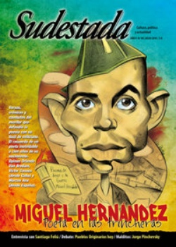

Buscar
Pueblos originarios hoy. De pie ante los vientos del saqueo
De una forma cada vez más violenta, las comunidades indígenas están siendo desalojadas, arrinconadas, contaminadas y criminalizadas por el predominio creciente de los súper negocios, con la complicidad de los gobiernos nacional y provinciales. La reciente Marcha de los Pueblos Originarios y la disposición al diálogo con el Estado, abrieron ricas discusiones sobre el modelo de desarrollo, pero también nuevas diferencias en la coordinación de sus luchas. Los debates urgen ante una realidad cruel.
Edición N° 90
Julio 2010
Revista bimensual
Comprar edición impresaSumario
- Miguel Hernández, poeta en las trincheras
- Saramago y la Realidad
- Pueblos originarios hoy. De pie ante los vientos del saqueo
- "Yo intento una canción de arte, incluso para denunciar"
- Jorge Pinchevsky, el violín del rock
- Chinoy: Angel de la cuadra
- "Somos una espina muy terrible para el capitalismo"
- "No teníamos otro horizonte que la revolución"
Compartir Articulo
Después de una larga caminata de dos meses y medio, el 3 de agosto de 1946 llegaron a Plaza de Mayo 174 integrantes de las comunidades kollas del norte, entre los que se encontraban ancianos y niños. Fueron recibidos por Farrell y Perón, quienes se llenaron la boca de promesas ante las cámaras de televisión. Pero la respuesta verdadera tuvo lugar al día siguiente, cuando la prefectura hizo su delicada tarea de expulsarlos de Buenos Aires. Bien temprano, los kollas fueron despertados por ruidos y forcejeos en el Hotel de los Inmigrantes. En medio de gases lacrimógenos, algunos gritaban "¡Perón, Perón!", sin saber que era su mismo gobierno el que los estaba expulsando. Y así, desarropados, sin poder cargar sus humildes bolsas de pertrechos, se vieron embarcados en un tren camino a la Puna, escoltados y humillados por las fuerzas de seguridad. Cada huella, como una esperanza cansada, de todo el camino de ida, fue borrada por ese viaje de vuelta en un tren que fue símbolo de la vergüenza nacional.
Pasaron 64 años del llamado Malón de la Paz, y los pueblos originarios de todo el país volvieron a marchar en protesta por su cruda realidad, que no ha cambiado demasiado, y para dejar en claro que son padres de nuestra historia. Juntos y divididos, mostraron no sólo una mayor capacidad organizativa, sino también política. Este crecimiento trajo también nuevas discusiones y diferencias, sobre todo respecto de la relación con el Estado y la confianza en un gobierno que no combatió la voracidad de los capitales sedientos de territorios vírgenes, un gobierno, además, hábil y necesitado de palabras amistosas. El fantasma del Malón de la Paz sigue alojado en los corazones de los caminantes originarios.
(La nota completa en la edición gráfica de Sudestada Nº90 - Julio 2010)
Comentarios
Martín Azcurra
Articulos más vistos


LIBRERÍA SUDESTADA

Colección infantil

Distribuidora de Libros

Suscripción

Sudestada en URUGUAY

Otros articulos de esta edición
Miguel Hernández, poeta en las trincheras
Un recorrido por versos, crónicas y combates de un escritor que defendió la poesía con más poesía, y también con ...
Jorge Pinchevsky, el violín del rock
Esta es la historia de Jorge Pinchevsky, conocido como el primer violinista del rock. Se trata de un hombre libre ...
Saramago y la Realidad
Cuando la Realidad necesita expresarse, busca una salida. Así recorre los pasillos del laberinto hasta encontrar a alguien que le ...
Chinoy: Angel de la cuadra
Algo insondable tiene el cantautor chileno Chinoy. En muy pocos años, este flaco pasó de ser el secreto mejor guardado ...
"No teníamos otro horizonte que la revolución"
Fragmento de una entrevista inédita realizada a Elías Castelnuovo el 20 de marzo de 1976, en su casa del barrio ...
"Yo intento una canción de arte, incluso para denunciar"
"En realidad, uno va diciendo lo mismo sólo que con nuevos versos", confiesa Santiago Feliú, de paso por Buenos Aires. ...